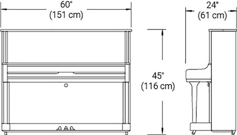

Khi đã đọc tới bài viết này, chắc hẳn bạn đã quyết định sẽ mua một chiếc piano rồi phải không nào? Và hẳn bạn đang háo hức mong chờ được dành hàng giờ thoả mãn niềm đam mê âm nhạc bên những người thân yêu. Tuy nhiên, bạn có thể sẽ cảm thấy khó khăn khi chọn lựa một chiếc đàn phù hợp với những điều kiện và tiêu chí của mình, bởi piano là loại nhạc cụ muôn hình vạn trạng. Cây đàn hoàn hảo hiển nhiên phải trông thật oách và nghe thật hay, nhưng khoan, điều quan trọng nhất chúng ta phải đưa vào cân nhắc khi mua đàn chính là kích cỡ phải vừa với vị trí định đặt của bạn. Hơn nữa, chất lượng âm thanh của đàn còn bị ảnh hưởng bởi các yếu tố khác như diện tích của căn phòng, hướng đặt và cách đặt đàn. Thật là nhiều những điều phức tạp và rối rắm! Nhưng đừng lo, chúng tôi ở đây để giúp bạn tìm được chiếc đàn phù hợp nhất, cho dù bạn sống trong một căn hộ ấm áp hay một ngôi nhà sang trọng!
Các Loại Đàn Piano Cơ
Như đã đề cập đến trong những bài viết trước, có 2 loại đàn phổ biến nhất là: piano upright và piano grand. Sự khác biệt dễ nhận thấy nhất giữa chúng là kích cỡ (piano grand lớn hơn piano upright), nhưng chúng cũng có những nét riêng phụ thuộc vào vị trí của bảng âm và độ căng dây. Do bảng âm của piano grand được đặt ngang, nên những chiếc đàn này sẽ có dấu ấn đặc trưng hơn so với những chiếc đàn piano upright, cụ thể thì trông chúng ‘hộp’ hơn. Vì vậy, khi chọn lựa loại đàn, bạn cần phải cân nhắc không chỉ về kích thước mà còn về thiết kế nội thất trong phòng bạn.

Piano grand là sự lựa chọn yêu thích của những nghệ sĩ chuyên nghiệp bởi chúng có âm thanh nổi bật và ‘đậm’ hơn so với piano upright, ngoại trừ chiếc piano upright Yamaha YUS Series có một loạt các âm sắc khá giống piano grand. Ngược lại, piano upright lại nhỏ gọn, đỡ tốn diện tích và có giá phải chăng hơn, nên chúng được ưa chuộng bởi học sinh âm nhạc và các trường học trên khắp mọi nơi trên thế giới.

Kích thước đàn piano cơ
Piano grand có nhiều kích cỡ khác nhau, từ size ‘baby’ dài 4 ½ feet cho đến size ‘concert’ có thể dài tới 9 feet. (Lưu ý: độ dài piano grand được đo từ key slip - miếng gỗ trước bàn phím - cho đến đoạn cuối của nắp đàn). Piano upright cũng có nhiều kích cỡ khác nhau, từ nhỏ nhất là ‘spinet’ (đã từng rất phổ biến vào những thập kỷ trước) cho đến ‘console’ và ‘studio’, với chiều cao lên tới trên 52 feet. Đặc biệt, gần như tất cả các loại đàn - bao gồm cả upright và grand- đều rộng khoảng 5 feet, bởi chúng đều có 88 phím đàn. Yamaha sản xuất đa dạng các loại piano grand, từ GB1K và GC Series baby grand (với các loại đàn dài 5’, 5’3’’, và 5’8’’), cho tới CX Series và SX Series (với chiều dài từ 5’3’’ cho tới 7’6’’), và mẫu đàn nổi tiếng toàn cầu CF Series của grand concert (với độ dài từ 6’3’’ đến 9’). Piano upright của Yamaha đa dạng về chủng loại, từ P22 và B Series nhỏ gọn, dành cho người mới chơi cho đến U Series - dòng đàn upright phổ biến nhất thế giới - cho đến YUS Series hàng đầu nói trên. Chiều cao của những cây đàn piano này thay đổi từ 45 "đến 52", và chiều sâu của chúng thay đổi từ chỉ 21 "đến 26". Độ sâu đặc biệt quan trọng vì như chúng ta sẽ thấy, những cây đàn piano upright được thiết kế để đặt dựa vào tường.
Vị trí đặt piano
Như đã đề cập từ trước, đàn piano upright được thiết kế để đặt dựa vào tường. Vị trí này không chỉ mang lại âm thanh tối ưu mà còn giúp bạn tận dụng tốt nhất không gian có sẵn, đặc biệt là trong các phòng nhỏ. (Về mặt thẩm mỹ, mặt sau của những cây đàn piano upright thường không được bắt mắt). Mặt khác, những piano grand cho âm thanh tốt nhất khi chúng ở giữa phòng hoặc đặt ở góc 45 độ trong một góc phòng. Tuy nhiên, là người đặt đàn, bạn sẽ muốn chắc chắn rằng nghệ sĩ piano - đặc biệt nếu đó là bạn! - có thể nhìn thấy phần còn lại của căn phòng (hoặc thậm chí có thể ra ngoài cửa sổ) thay vì phải quay mặt vào tường. Điều quan trọng nữa là phải bảo vệ đàn piano của bạn khỏi bất kỳ sự thay đổi khí hậu đột ngột nào có thể gây hại cho nhạc cụ. Ví dụ, bạn không bao giờ nên đặt đàn piano dưới ánh sáng mặt trời trực tiếp. Mặc dù đặt nó gần cửa sổ có thể trông đẹp mắt về mặt thẩm mỹ, nhưng sức nóng của mặt trời có thể dễ dàng làm hỏng nó. Tương tự, không nên đặt nó gần các lỗ thông hơi, vì bất kỳ sự thay đổi nhiệt độ nào cũng sẽ ảnh hưởng đến thiết bị.